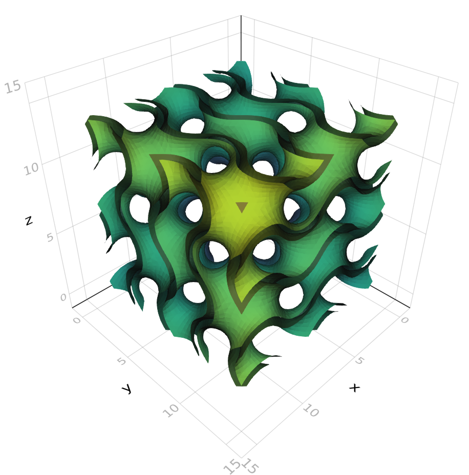

Examples
NRRD Data
The file for this example can be found here: http://www.slicer.org/slicerWiki/images/0/00/CTA-cardio.nrrd
using FileIO
using NRRD
using Meshing
using MeshIO
using GeometryBasics
# load the file as an AxisArray
ctacardio = load("CTA-cardio.nrrd")
# use marching cubes with isolevel at 100
algo = MarchingCubes(iso=100, insidepositive=true)
# use marching tetrahedra with iso at 100
# algo = MarchingTetrahedra(iso=100, insidepositive=true)
# use Naive Surface Nets with iso at 100
# algo = NaiveSurfaceNets(iso=100, insidepositive=true)
# generate the mesh using marching cubes
mc = HomogenousMesh{Point{3,Float32},TriangleFace{Int}}(ctacardio, algo)
# we can call isosurface to get a vector of points and vector of faces indexing to the points
# vertices, faces = isosurface(ctacardio, algo, Point{3,Float32}, TriangleFace{Int})
# save the file as a PLY file (change extension to save as STL, OBJ, OFF)
save("ctacardio_mc.ply", mc)
Functions
using Meshing
using FileIO # MeshIO should also be installed
using GeometryBasics
gyroid(v) = cos(v[1])*sin(v[2])+cos(v[2])*sin(v[3])+cos(v[3])*sin(v[1])
gyroid_shell(v) = max(gyroid(v)-0.4,-gyroid(v)-0.4)
# generate directly using GeometryBasics API, normals are computed by GeometryBasics
gy_mesh = GLNormalMesh(gyroid_shell, Rect(Vec(0,0,0),Vec(pi*4,pi*4,pi*4)),
MarchingCubes(), samples=(50,50,50))
save("gyroid.ply", gy_mesh)
# view with Makie
import Makie
using LinearAlgebra
Makie.mesh(gy_mesh, color=[norm(v) for v in gy_mesh.vertices])